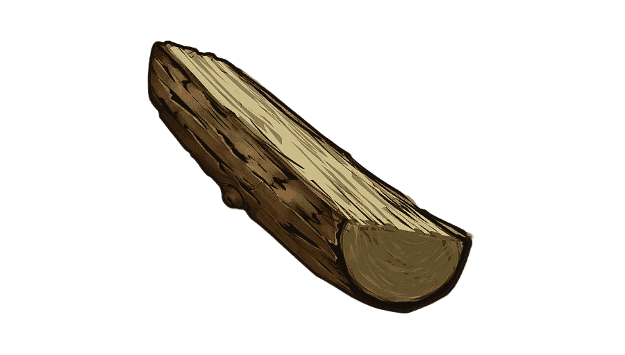

Madera
La madera es un recurso básico esencial para construir, craftear herramientas iniciales y progresar en las primeras etapas del juego.
Piedra

La piedra es un recurso clave para mejorar bases y fabricar herramientas más resistentes que las básicas de madera.
Azufre

El azufre es uno de los recursos más importantes del juego. Se usa principalmente para fabricar pólvora y explosivos, necesarios para munición avanzada, raideos y herramientas de demolición.
Metal de alta calidad

El mineral de alta calidad se refina para obtener HQM, un material avanzado usado en armas, herramientas y equipo de alto nivel.
Fragmentos de metal

Los fragmentos de metal son básicos para fabricar armas, herramientas, munición y gran parte del equipo intermedio del juego.
Carbón

El carbón se obtiene al quemar madera y es imprescindible para fabricar pólvora junto al azufre.
Tela

La tela se obtiene de plantas de cáñamo o animales y se utiliza para fabricar ropa, objetos médicos y materiales básicos de supervivencia.
Grasa Animal

La grasa animal se usa principalmente para fabricar combustible bajo de calidad y otros recursos útiles en las primeras fases del juego.
Pólvora

La pólvora es un recurso fundamental para fabricar munición, explosivos y herramientas de asalto, creada a partir de azufre y carbón.
Combustible Bajo de Calidad

El combustible bajo de calidad se usa para hornos, generadores, vehículos y diversas herramientas que requieren energía.
Engranajes

Los engranajes se encuentran en monumentos y vehículos. Son necesarios para fabricar puertas blindadas, cerraduras y armaduras reforzadas.
Batería Eléctrica Pequeña

La batería eléctrica pequeña almacena energía en menor cantidad que la batería grande y se utiliza para sistemas eléctricos básicos, trampas pequeñas y dispositivos simples dentro de la base.